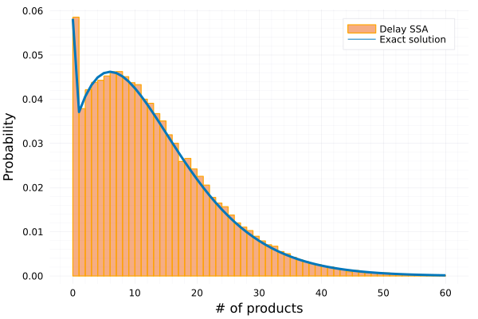

A bursty model with delay
Model
We study the following gene expression model which does not have an explicit gene state description and that the product (RNA or protein denoted as P) is actively transcribed in bursts whose size are distributed according to a geometric distribution. This means the propensity functions is given by $f(n) = ab^n/(1+b)^{n+1}$ for any positive integer $n$. The bursty model writes:
\[\frac{ab^n}{(1+b)^{n+1}}: \emptyset \rightarrow nP \text{ triggers }nP\Rightarrow\emptyset \text{ after $\tau$ time.}\]
Markovian part
The system has an explict solution which is obtained in [1, Supplementary Note Section 2]. We first construct reaction network
@parameters a b t
@variables X(t)
burst_sup = 30
rxs = [Reaction(ab^n/(1+b)^{n+1},nothing,[X],nothing,[n]) for n in 1:burst_sup]
rxs = vcat(rxs)
@named rs = ReactionSystem(rxs,t,[X],[a,b])In the example, we set $a=0.0282$ and $b=3.46$ and set the upper bound of bursting as burst_sup = 30. This means we ignore all the reactions $ab^n/(1+b)^{n+1}:\emptyset \rightarrow nP$ for any $n > 30$ where the reaction rate $ab^n/(1+b)^{n+1} \sim 10^{-6}$. We first convert the ReactionSystem to a JumpSystem and initialise the discrete problem by
jumpsys = convert(JumpSystem, rs, combinatoric_ratelaws=false)
u0 = [0]
tf = 200.
tspan = (0,tf)
timestamp = 0:1:tf
ps = [0.0282, 3.46]
τ = 130.
dprob = DiscreteProblem(jumpsys,u0,tspan,ps)Non-Markovian part
Next, we define the non-Markovian part. Here we mainly need to consider the delay trigger reactions that is, for nth-reaction, $\emptyset \rightarrow nP$, the delay channel will be added of a vector $[\tau,\ldots,\tau]$ of size $n$. Thus, we have
delay_trigger_affect! = []
for n in 1:burst_sup
push!(delay_trigger_affect!, function (integrator, rng)
append!(integrator.de_chan[1], fill(τ, n))
end)
end
delay_trigger = Dict([Pair(i, delay_trigger_affect![i]) for i in 1:burst_sup])
delay_interrupt = Dict()
delay_complete = Dict(1=>[1=>-1])
delayjumpset = DelayJumpSet(delay_trigger, delay_complete, delay_interrupt)delay_trigger- Keys: Indices of reactions defined in
jumpsetthat can trigger the delay reaction. For each $n= 1,\ldots,30,$ the reaction $ab^n/(1+b)^{n+1}:\emptyset \rightarrow nP$, that will trigger $nP$ to degrade after time $\tau$. - Values: An update function that determines how to update the delay channel. In this example, once the delay reaction is trigged, the delay channel (which is the channel for $P$) will be added an array of delay time $\tau$ depending on the bursting number $n$.
- Keys: Indices of reactions defined in
delay_interrupt- There are no delay interrupt reactions in this example so we set
delay_interrupt = Dict().
- There are no delay interrupt reactions in this example so we set
delay_complete- Keys: Indices of delay channel. Here we only have one delay channel for $P$.
- Values: A vector of
Pairs, mapping species index to net change of stoichiometric coefficient. Here the degradation will cause the first species to have a net change of $-1$. In this example, one might have $nP$ leaving the system simultaneously. Such multiple delay reactions are taken care of automatically by the delay SSA algorithm.
We define the delay jump problem by
de_chan0 = [[]]
jprob = DelayJumpProblem(jumpsys, dprob, DelayRejection(), delayjumpset, de_chan0, save_positions=(false,false))where de_chan0 is the initial condition for the delay channel where we assume no ongoing delay reactions at $t=0$. DelayJumpProblem inputs JumpSystem, DelayJumpProblem, DelayJumpSet, the algorithm and the initial condition of the delay channel de_chan0.
Visualisation
using DiffEqJump
ensprob = EnsembleProblem(jprob)
@time ens = solve(ensprob, SSAStepper(), EnsembleThreads(), trajectories=10^5)Then check with the exact probability distribution 
References
[1] Qingchao Jiang, Xiaoming Fu, Shifu Yan, Runlai Li, Wenli Du, Zhixing Cao, Feng Qian, Ramon Grima, "Neural network aided approximation and parameter inference of non-Markovian models of gene expression". Nature communications, (2021) 12(1), 1-12. https://doi.org/10.1038/s41467-021-22919-1